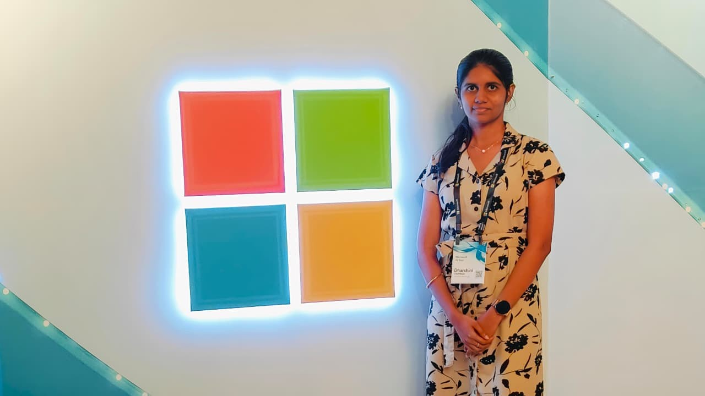
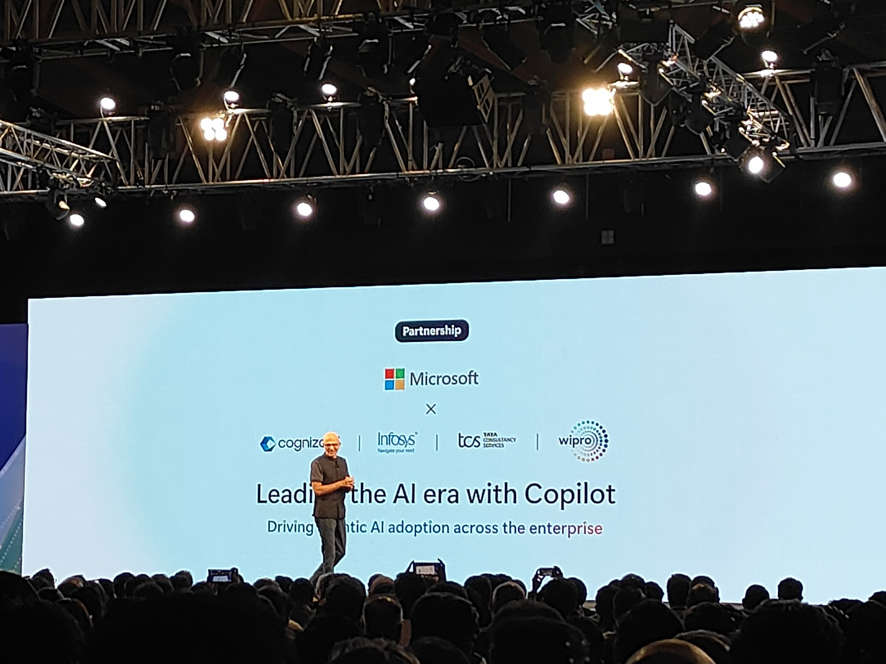
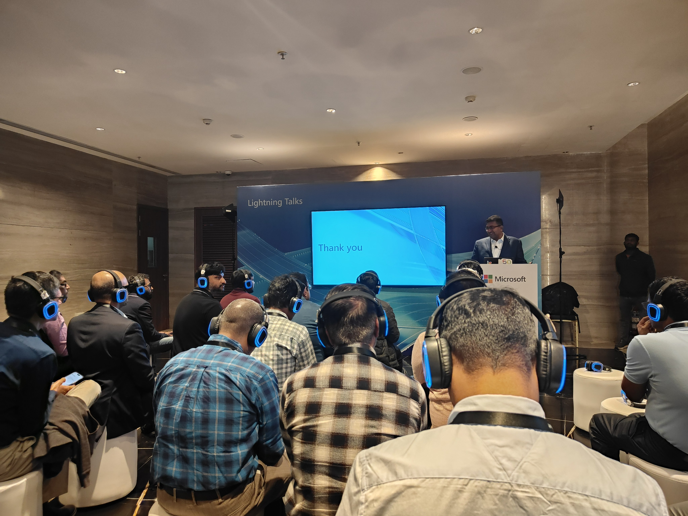
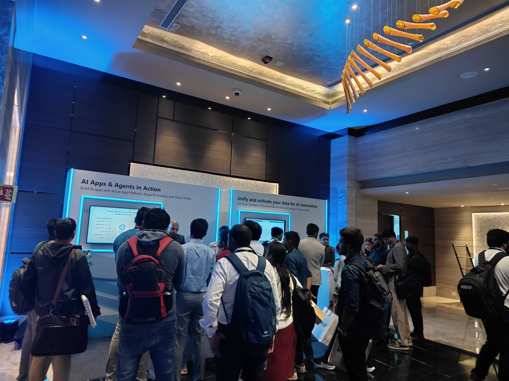

This one felt quite different from the other AI events I've been to recently.
Most events I attend are developer-focused — smaller rooms, technical sessions, hands-on workshops. This one was much larger in scale. The audience, the setup, the kind of conversations happening — everything was more aligned with how AI is being discussed at an industry level, not just an engineering level.
I got the opportunity to attend through Cognizant. Walking into the venue, it was clear this wasn't about new tools or frameworks. It was about understanding where AI is heading at a scale most of us don't usually think about.

A different kind of audience
The first thing that stood out was who was there. It wasn't just developers. That itself changed the structure of almost every session — away from implementation details, toward direction.
Instead of "how does this work," most sessions asked "where is this going, how are organizations adopting it, and what changes should we expect." The framing was macro, not micro.
From experimentation to AI factories
His talk focused on how India's AI ecosystem is evolving — specifically the transition happening right now from experimental efforts to enterprise-scale adoption. Until recently, most AI work lived in proof-of-concept territory: small internal tools, isolated projects, things that worked in demos but never reached production at scale.
The term he introduced was "AI factories" — the idea that AI is no longer something layered on top of existing systems. It's becoming part of the core workflow, something that continuously runs, learns, and improves productivity across teams and functions.
AI is no longer something added on top of systems. It is becoming part of the core workflow.

Reshaping work, not replacing it
His session offered a more grounded perspective on something that gets distorted in most AI conversations. Rather than predicting sweeping job replacement, he described something more granular — and more accurate to how organizations are actually experiencing the change on the ground.
The argument: AI doesn't simply remove roles — it breaks down the tasks within a role and optimizes them individually. Over time, this shifts the nature of work from effort-based to outcome-based. The role changes shape; it doesn't disappear.
Sweeping, often used in headlines. Not how most organizations are actually experiencing the change on the ground.
Specific tasks within roles get optimized. Work moves from measuring effort to measuring outcomes. More realistic — and harder to communicate simply.
The session I connected with most
Her talk was more aligned with how developers think — which made it land differently from the keynotes. The emphasis wasn't on what AI can do at scale. It was on how to make AI actually usable. Simplifying complex workflows. Designing AI-native products. Building systems that feel intuitive for the people using them.
Making systems more powerful is not the same as making them more useful.
Usability and alignment with how people actually work is its own design challenge — and one that often gets far less attention than raw capability. That framing was a useful counterweight to the rest of the day.
Investment at a scale that signals commitment
Beyond individual sessions, a few broader themes ran through the entire event. One was the scale of investment — not in products, but in infrastructure.
Large organizations in India are already deploying AI tools at significant scale — not in pilots, but in broad rollouts across entire workforces.
Each deploying tools like Copilot to tens of thousands of employees. That's not an experiment — it's a signal that the transition from evaluation to operation is already underway, quietly, at scale.

AI as a teammate, not a tool
One framing appeared across multiple sessions — and felt more precise than most ways of describing what AI is becoming in organizations right now. Not a tool to be used. Something closer to a teammate that operates alongside people.
The framing keeps humans in the loop. It changes how work is done — not who does it. That distinction matters, and it came through clearly across the sessions.
A macro view, not a technical one
Compared to smaller developer events, this one operated at a different altitude. The questions being asked were different in kind, not just in scope.
- How to build something
- Which tools to use
- Technical implementation
- Why things are being built
- How adoption is happening
- What impact looks like at scale
By the end of the event, I didn't walk away with technical notes or implementation ideas. I walked away with a clearer sense of direction — answers to questions I hadn't fully articulated before attending.
Where most people actually are
The networking conversations were a useful counterpoint to the keynotes. Where the stage described adoption at scale, the hallways revealed that most teams are still navigating the transition.
- How companies are integrating AI into existing systems
- How teams are adapting to new workflows
- What skills are becoming more important
- The gap between experimentation and actual daily use
It was interesting to see that many people are still in transition — figuring out how to move from experimentation to real, sustained usage. The keynote vision and daily reality still have a gap worth closing.

Less about learning, more about orientation
This event was not the place to pick up new technical skills. It was something more useful in a different way — a chance to see the larger picture of where AI adoption actually is, not where it's projected to be.
AI is moving from isolated use cases to integrated systems across organizations. Not as a future trajectory — as something already in motion, already in production, already shaping how work gets done.
AI is no longer something we prepare for in the future.
It is already becoming part of how companies operate today.
The question isn't whether to adopt — it's how to close the gap between experimentation and meaningful, sustained use. That's where the real work is happening, and where the most interesting problems still live.
The shift from isolated use cases to integrated systems is not coming — it's already here.
The gap to close isn't between AI and organizations. It's between experimentation and operation. That's the work in front of most teams right now.